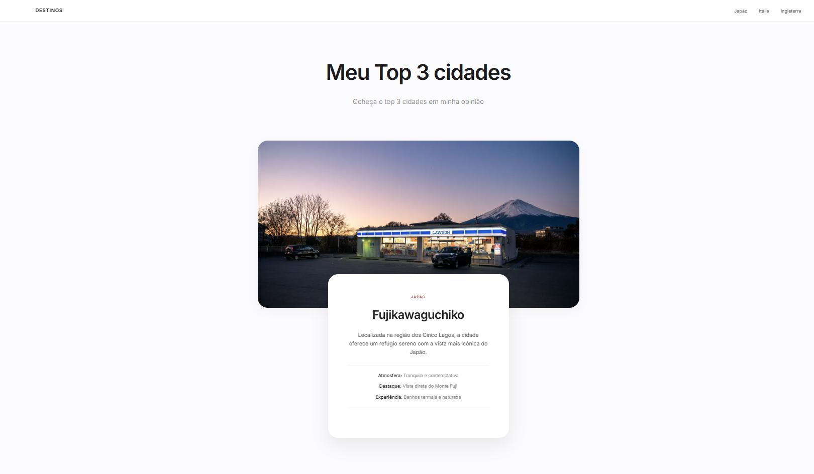

Box Model
Aprendendo sobre o modelo de caixa (Box Model) em CSS para entender como os elementos são estruturados e estilizados.
O que aprendi
Nessa aula, aprendi sobre o modelo de caixa (Box Model) em CSS, que é um conceito fundamental para entender como os elementos são estruturados e estilizados em uma página web. O Box Model descreve a estrutura de um elemento HTML como uma caixa composta por quatro áreas: conteúdo, preenchimento (padding), borda (border) e margem (margin). Aprendi como cada uma dessas áreas afeta o layout e a aparência dos elementos, e como usar as propriedades CSS para controlar o tamanho, o espaçamento e a posição dos elementos na página. Além disso, tive a oportunidade de praticar aplicando o Box Model em meus projetos, o que me ajudou a entender melhor como os elementos interagem entre si e como criar layouts mais complexos usando CSS.
O que desenvolvi
Nessa aula, desenvolvi a habilidade de aplicar o modelo de caixa (Box Model) em meus projetos CSS. Pratiquei o uso de propriedades como padding, border e margin para controlar o espaçamento e a aparência dos elementos em minhas páginas web. Além disso, experimentei diferentes combinações dessas propriedades para criar layouts mais complexos e visualmente atraentes. Essa prática me ajudou a entender melhor como os elementos interagem entre si e como usar o Box Model para criar designs mais eficazes e responsivos.
Projeto(s)

Conhecimentos Adquiridos
- Margem 100%
- Borda 100%
- Preenchimento (Padding) 100%
- box-sizing e border-box. 100%
Desafios
São muitos tipos mas com o tempo percebe-se que é mais fácil de lidar com eles sabendo que eles são muito úteis.